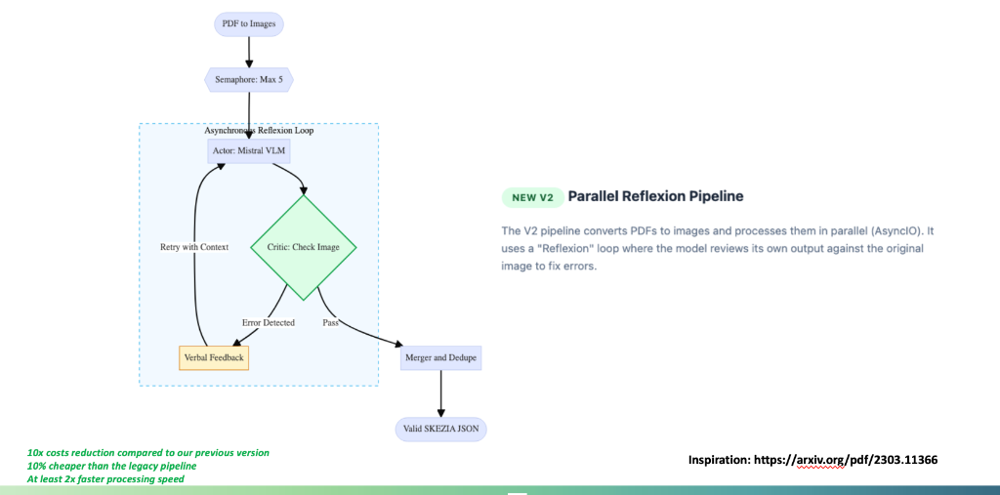
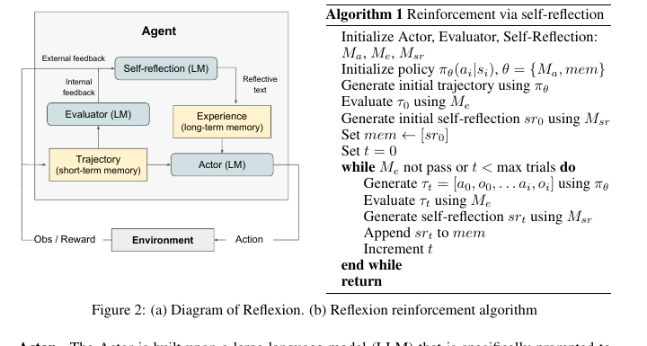
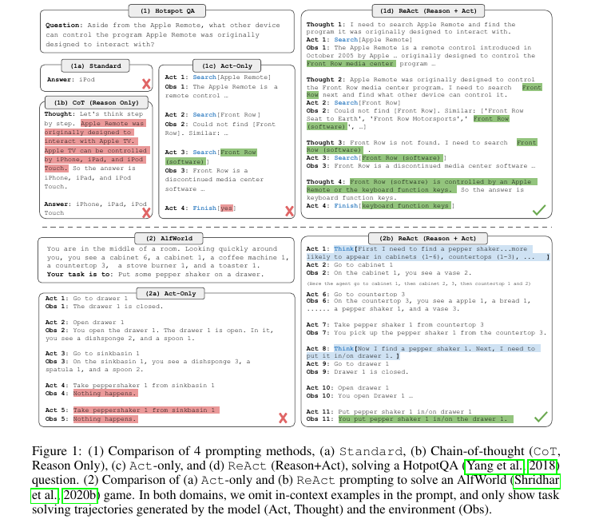

Designs an LLM cache around semantic equivalence, cache confidence, fallbacks, and telemetry.
Technical Note
Using FAISS Caching to Reduce LLM Cost and Latency
A public-safe design note on semantic caching for retrieval and extraction workflows where repeated user intent can be reused without hiding quality, freshness, or fallback decisions.
Domain: LLM Systems
Focus: Retrieval and Caching
Year: 2026
Status: Portfolio Note

Fast Scan
What this note proves
This note shows cost and latency awareness, not just familiarity with vector databases.
Embed normalized requests, search a FAISS index, gate by similarity, then reuse or call the model.
Track cache hit rate, p95 latency, token savings, stale-answer rate, and human correction rate.
No proprietary prompts, documents, user data, credentials, or production cost claims are published.
Abstract
LLM applications often repeat the same intent with small wording changes. A semantic cache can avoid unnecessary model calls by reusing prior outputs when the new request is close enough to an approved request. FAISS is useful here because it supports fast nearest-neighbor lookup over embeddings. The useful engineering work is not the index alone. The stronger work is the decision layer around it: normalization, thresholding, freshness checks, fallback behavior, and logs that let a reviewer inspect when cached answers were reused.
Problem
In extraction, analytics, and support workflows, repeated user questions can drive up latency and model spend. Exact string caching misses paraphrases. Blind semantic caching can be worse, because it may reuse an answer for a request that looks similar but has a different data boundary or time sensitivity. The goal is to reduce repeated calls while preserving a clear path back to the model whenever confidence, freshness, or policy checks are weak.
Data Boundary
A public portfolio note should describe the pattern without publishing private embeddings, raw documents, internal prompts, cache records, account identifiers, or vendor credentials. The examples here use generic request and response concepts. In a real system, stored cache entries should be scoped by tenant, data permission, model version, prompt version, and retrieval corpus version.
Field Note
The tempting version of this project is to celebrate cache hits. The useful version is to explain when a cache hit should be rejected. I would rather show a slightly more conservative system with clear fallback reasons than a faster one that silently reuses stale or wrong answers.
Method
Architecture
Semantic Cache Flow
User request
Capture task, permission scope, and freshness needs.
Embedding
Embed normalized request for approximate nearest-neighbor lookup.
FAISS lookup
Retrieve similar approved requests and cached outputs.
Decision gate
Reuse, refresh, or fall back based on confidence and policy checks.
The cache should be treated as an inference shortcut, not as a source of truth. Every reuse decision should leave enough metadata for observability: request hash, nearest-neighbor score, cache age, model version, prompt version, token cost avoided, fallback reason, and review outcome when available.
Visual Evidence Strip
These visuals show how semantic caching fits into broader extraction and reflection systems. The cards emphasize decision boundaries rather than unsupported production cost claims.

Short Demo Clip
This silent clip turns the cache decision into a scannable sequence: normalize, embed, retrieve, gate, reuse or refresh, then log the decision.
Semantic cache reuse decision
The clip keeps the engineering point visible: a cache layer is only credible when similarity, scope, freshness, and fallback behavior are observable.
Transcript
The request is normalized and embedded, FAISS retrieves similar approved requests, decision gates check similarity, freshness, scope, and prompt version, and the system either reuses, refreshes, or falls back while logging token and latency savings.
Research Connections
These paper cards make the agent memory and tool-use lineage visible while keeping Attention cite-only because the reuse license for its figures is not public enough for direct copying.

Reflection as memory
Source: Reflexion: Language Agents with Verbal Reinforcement Learning, Noah Shinn, Federico Cassano, Edward Berman, Ashwin Gopinath, Karthik Narasimhan, and Shunyu Yao, 2023. License: CC BY 4.0. Link. Modified: cropped/resized only.
Connection: supports the idea that feedback, cache metadata, and correction history should be part of the system state.

Actions need observations
Source: ReAct: Synergizing Reasoning and Acting in Language Models, Shunyu Yao, Jeffrey Zhao, Dian Yu, Nan Du, Izhak Shafran, Karthik Narasimhan, and Yuan Cao, 2023. License: CC BY 4.0. Link. Modified: cropped/resized only.
Connection: informs how cache decisions should be paired with retrieval observations and explicit fallback actions.
Cite-Only Source
Transformer background
Source: Attention Is All You Need, Ashish Vaswani, Noam Shazeer, Niki Parmar, Jakob Uszkoreit, Llion Jones, Aidan N. Gomez, Lukasz Kaiser, and Illia Polosukhin, 2017. License note: arXiv non-exclusive distribution license; no external figure copied. Link.
Connection: cited as the architecture lineage behind modern Transformer-based embedding and generation systems.
No figure reusedEvaluation
I would evaluate this with both system metrics and quality metrics. System metrics include cache hit rate, p50 and p95 latency, token cost avoided, index lookup time, fallback rate, and cache invalidation frequency. Quality metrics include stale-answer rate, semantic mismatch rate, human correction rate, and whether cached responses preserve the right data boundary.
Production measurement: The right claim is not "FAISS reduces cost" in isolation. The
right claim is a measured reduction in model calls under a defined traffic pattern, with mismatch and
fallback rates reported beside it.
Limitations
Semantic caching is risky when requests contain time-sensitive data, personalized permissions, rapidly changing corpora, or subtle legal and medical wording differences. A high similarity score is not proof that the old answer is safe to reuse. The system should fail open to a fresh model call when scope, freshness, or policy checks are uncertain.
What I Would Improve Next
- Add cache segmentation by tenant, corpus version, prompt version, and model version.
- Run threshold sweeps to compare cost savings against semantic mismatch risk.
- Add reviewer feedback loops so corrected cache entries improve future routing decisions.
- Expose dashboard metrics for hit rate, fallback reason, stale entries, and token savings.